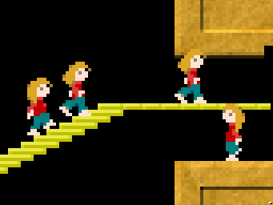

About onFOSS-LAN
onFOSS-LAN is a online, "Free (as Freedom) and Open Source" LAN-Party hosted by hribhrib. The goal is to get people together, enjoying the art of computer games and having a great time in these days. The FOSS community is a place of being open minded and acceptance to all different kinds of people with the focus of fully transparent systems and protecting individuals. So it does not matter if you are on Windows, Mac or Linux and it is also NOT necessary to have a PC MASTERRACE setup to run those games.
This concept was originally started at hribhrib.at
Next event
Next event is Saturday 19 March 2022, 14:00 UTC, see schedule.
Additionally, I am running a fundraiser to help the people suffering from the war in Ukraine 🇺🇦. I will match your donation (up to $500 total) and additionally, the government of Canada 🇨🇦 will match mine until 18 March. So, that's triple the value for any donation you make. It doesn't have to be to the Canadian Red Cross, you probably have a local equivalent.
UPDATE (2022-03-08): Canada reached the $10M already so they are not doubling anymore. I'll still double but this means your amount won't count as triple anymore.
UPDATE (2022-03-13): Canada increased the limit to $30M, so any donation you make is once again tripled.
UPDATE (2022-03-14): Oh, never mind, this goal has already been reached. Anyway, I'll still match what you donate!
Donations are based on the honour system since dealing with money is complicated. Just let me know what you donated and I'll match. I'll post the donations here as the come in. You can be anonymous if you want or keep the amount secret. Contact me over Matrix, e-mail or in the Matrix/XMPP channels listed below.
You can also use this form. Simply don't fill in your name if you wish to remain anonymous.
Donations so far:
- Anonymous: €40
And of course you don't have to donate to join the event!
Games
There are a few game servers running. To connect, simply start the game and connect to this domain. See also the Help section for more information.
| Armagetron Advanced | Drive your lightcycle and leave a lightwall behind you. Survive as long as you can and try to make other run into walls. | More info | |
 |
Bzflag | Drive around in a tank that can jump, trying to shoot your opponents while dodging their bullets. | More info |
 |
Hedgewars | Worms-like game where your team of hedgehogs needs to destroy the other teams using the ludicrous arsenal at their disposal. | More info |
|  | Lix | Lemmings-like game where you need to guide your little people to safety despite their best efforts of wandering into things that will kill them. | More info |
 |
Mindustry | A building and tower defence game where you build up an industry and defences against ever larger waves of enemies. | More info |
 |
OpenHV | Real-time strategy game where you mine resources and build units to attack and defend. | More info |
 |
OpenSpades | Mix between a first person shooter and Minecraft. Build defence structures, dig many tunnels or go on the offensive. Warning: uses potentially non-open assets. |
More info |
 |
SuperTuxKart | Kart racing game where you can use the various power-ups to give yourself a boost of hinder your opponents. | More info |
 |
Teeworlds | Fast-paced 2D side-scrolling shooter game where you have a big gun and a grappling hook. | More info |
 |
Unvanquished | First-person shooter of aliens vs humans. There are several classes and it's possible to build structures. | More info |
 |
Xonotic | First-person shooter where players compete in a 3D world. It features Battle Royale mode. | More info |
Enjoy!
Communication
We use Mumble voice chat on mumble://hribhrib.at. It is the main mode of cummunication during the event.
Matrix chat on #xmpp_onfoss_conference.hribhrib.at:matrix.org
XMPP chat on onfoss@conference.hribhrib.at
See the help page for more information on how to connect to these services.
Code
Code for setting up server is on Github